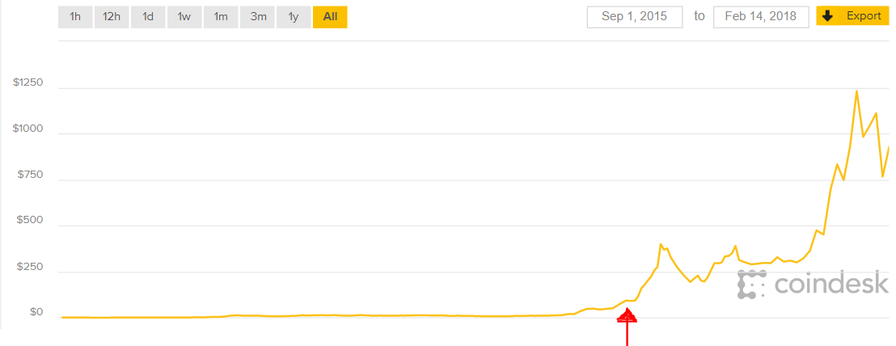

# Predict Ether Price with a LSTM RNN
## Stephanie Marker > github.com/smarker > stephaniemarker.com > stephanie.marker93@gmail.com > software engineer at <svg xmlns="http://www.w3.org/2000/svg" version="1.1" height="55" width="55"> <rect height="55" width="55" fill="#f3f3f3"/> <rect height="25" width="25" x="2" y="2" fill="#F35325"/> <rect height="25" width="25" x="28" y="2" fill="#81BC06"/> <rect height="25" width="25" x="2" y="28" fill="#05A6F0"/> <rect height="25" width="25" x="28" y="28" fill="#FFBA08"/> </svg>
### June 2017 <img src="images/cryptocurrency.jpg">
<img src="images/blockchain.svg">
## Ether Price History <img src="images/ether-price.png">
## Algorithm Overview 1. Analyze data for patterns 2. Feature Selection and Normalization 3. Create stationary timeseries dataframe 4. Split data into train and test 5. Test with multiple models (LSTM RNN, etc.) 6. Verify results
 | | Date | Price | eth\_tx | eth\_address | eth\_supply | ...| | - | ---------- | ------ | ------- | ------------ | ----------- |----| | 0 | 2017-12-18 | 785.99 | 984021 | 15048543 | 9.6364e7 |... | | 1 | 2017-12-17 | 717.71 | 876574 | 14830225 | 9.6343e7 |... | |...| ... | ... | ... | ... | ... |... | |289| 2017-3-1 | 77.53 | 112202 | 1663543 | 9.1228e7 |... |
### Feature Selection (Top 5 Features) * Recursive Feature Elimination > price, eth_address, eth_supply, eth_marketcap, eth_hashrate ``` from sklearn.feature_selection import RFE from sklearn.ensemble import RandomForestRegressor from matplotlib import pyplot as plt # select top 5 features rfe = RFE(RandomForestRegressor(n_estimators=500,random_state=1,5)) fit = rfe.fit(X, y) ```
## Define Normalization Function ``` from sklearn.preprocessing import MinMaxScaler def apply_minmax_scaling(train, test, features): SCALER = MinMaxScaler(feature_range = (-1, 1)) TRAIN_SCALED = SCALER.fit_transform(train) TEST_SCALED = SCALER.fit_transform(test) # convert numpy array to DataFrame TRAIN_SCALED = pd.DataFrame(TRAIN_SCALED) TRAIN_SCALED.columns = features TEST_SCALED = pd.DataFrame(TEST_SCALED) TEST_SCALED.columns = features return TRAIN_SCALED, TEST_SCALED, SCALER ```
## Example of [0, 1] Normalization <img src="images/min_max.jpg">
## Define Stationizing (Differencing) Function <img src="images/stationize.png"> ``` def difference_ts(ts, interval=1): stationary_ts = ts.copy(deep=True) COLUMNS = ts.columns for column in COLUMNS: for i in range(interval, len(ts)): stationary_ts.loc[:, column][i] = \ ts.loc[:, column][i] - ts.loc[:, column][i - interval] return stationary_ts ```
## Train-Test Split * Prevent Look-Ahead Bias ``` def train_test_split(ts, test_set_size): TRAIN = ts[:len(ts) - test_set_size] TEST = ts[-test_set_size:] return TRAIN, TEST ```
## testing with multiple models ## a background on LSTM RNN
## Feed-Forward NN vs Recurrent NN | Feed Forward | Recurrent | | -------------- | ---------- | | info fed from input -> hidden -> output (no loops) | Loops | | primarily for supervised learning | supervised or unsupervised learning | | data not sequential/time dependent | learn sequential data | | no memory | memory |
* Feed-Forward - 2D Input (samples, features) * LSTM RNN - 3D Input (samples, timesteps, features) <img src="images/feed_vs_rnn.jpg">
## LSTM RNN > Forget gate, Input gate, Output gate <img src="images/lstm.png">
## LSTM: Apply Stationizing, Normalizing Functions ``` def run_lstm(ts, len_test, epochs, batch_size, alpha, dropout): RAW = ts.copy( deep=True ) FEATURES = ts.columns # stationize STATIONARY = difference_ts(ts) STATIONARY_TRAIN, STATIONARY_TEST = \ train_test_split(STATIONARY, len_test) # normalize SCALED_STATIONARY_TRAIN, SCALED_STATIONARY_TEST, SCALER = \ apply_minmax_scaling(STATIONARY_TRAIN,STATIONARY_TEST,FEATURES) # ... ```
## LSTM: Reshape as 3d ``` # ... train_X, train_y, test_X, test_y = input_output_split( SCALED_STATIONARY_TRAIN, SCALED_STATIONARY_TEST, 'Price') # copy before converting test x and test y to 3d for lstm test_X_copy = test_X.copy(deep=True) test_y_copy = test_y.copy(deep=True) # reshape [samples, timesteps, features] for lstm model train_X = reshape_as_3d(train_X) test_X = reshape_as_3d(test_X) fit_lstm_model(train_X, train_y, test_X, test_y, RAW, SCALER, \ FEATURES, epochs, batch_size, alpha, dropout) ```
## LSTM: Create Model, Configure Layers, Dropout ``` def fit_lstm_model(train_X, train_y, test_X, test_y, RAW, \ SCALER, FEATURES, epochs, batch_size, alpha, dropout): # ... for index, EPOCH in enumerate(EPOCH_LIST): model = Sequential() # LSTM hidden layer where input_shape is input layer model.add(LSTM(HIDDEN_LAYER_NUM_NEURONS, \ input_shape=(train_X.shape[1], train_X.shape[2]))) model.add(Dropout(dropout)) model.add(Dense(1)) model.compile(loss='mae', optimizer='adam') ```
## LSTM: 0.5 Dropout <img src="images/dropout.png">
## LSTM: Fit Model, Make Prediction ``` # Fit LSTM model history = model.fit(train_X, train_y, epochs=EPOCH, batch_size=BATCH_SIZE, validation_data=(test_X, test_y), verbose=0, shuffle=False) # make a prediction model_output = model.predict(test_X) ```
## LSTM: Reshape as 2d ``` # reshape back to 2d test_X_2d = reshape_as_2d(test_X, FEATURES) test_y = pd.DataFrame(test_y) test_y.columns = ['Price'] ```
## LSTM: Invert Normalization, Stationizing (Differencing) ``` # invert scaling on forecast predictions = invert_minmax_scaling(test_X_2d,model_output,SCALER) # invert differencing on forecast inverted = list() for i in range(len(predictions)): value = invert_time_difference(RAW['Price'], predictions[i], len(predictions) - i + 1 ) inverted.append(value) ```
## LSTM: Verify Results with other models <img src="images/train_validation_error.png"> ``` # compare actual results with predicted LSTM_actual = RAW[-TEST_SET_SIZE:]['Price'] LSTM_predicted = inverted ```
> 4500 epochs, 32 batch size, 0.5 dropout <img src="images/results.png">
## Resources * [Smarker/udacity-ml/projects/capstone/report.pdf](https://github.com/Smarker/udacity-ml/blob/master/projects/capstone/report.pdf) * [Udacity Machine Learning Nanodegree](https://www.udacity.com/course/machine-learning-engineer-nanodegree--nd009t) * [LSTM RNN](http://colah.github.io/posts/2015-08-Understanding-LSTMs/) * [Etherscan](https://etherscan.io/charts)